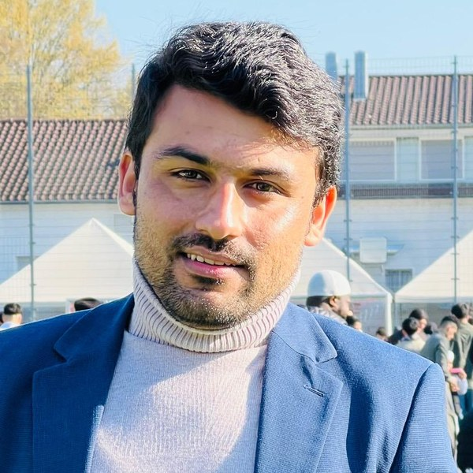

Zia Ur Rehman
Technical University of Munich (TUM)
About
I am a PhD researcher in Computational Mathematics at the Technical University of Munich (TUM), supervised by Prof. Dr. Gero Friesecke. My research combines optimal transport, deep learning and molecular dynamics to develop efficient methods for sampling high-dimensional Boltzmann distributions. I focus on combining mathematical theory with machine learning to develop reliable and computationally efficient methods for molecular simulation.
Research interests
- Optimal transport and computational mathematics
- Normalizing flows and generative modeling
- Molecular dynamics and Boltzmann sampling
- High-dimensional probability and machine learning
Education
Advisor: Prof. Dr. Gero Friesecke
Thesis: Generative adversarial network model for image input with noise. Supervisor: Prof. Marcin Woźniak
Publications
Current work
A transport consistency penalty (TCP) for training Boltzmann generators, with guarantees in total variation, Wasserstein distance and effective sample size, and no need for the partition function.
Talks
Contact
Department of Mathematics, School of CIT
Technical University of Munich
Boltzmannstr. 3, 85748 Garching, Germany
ziaur.rehman@tum.de